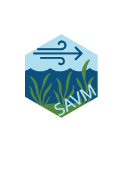

Package index
-
app_ui() - The application User-Interface
-
compute_fetch()visualize_outsiders() - Compute wind fetch and wind weighted fetch
-
read_sav()read_sav_csv()read_sav_pts()read_sav_aoi() - Read SAV data from different formats
-
invert_polygon() - Invert a Polygon
-
plot_sav_distribution()plot_sav_density()plot_sav_tmap() - Plot SAV Data Distribution
-
preview_grid() - Preview grid
-
run_app() - Run the Shiny Application
-
sav_load_model() - Load SAV Model
-
sav_model() - Apply SAV prediction models